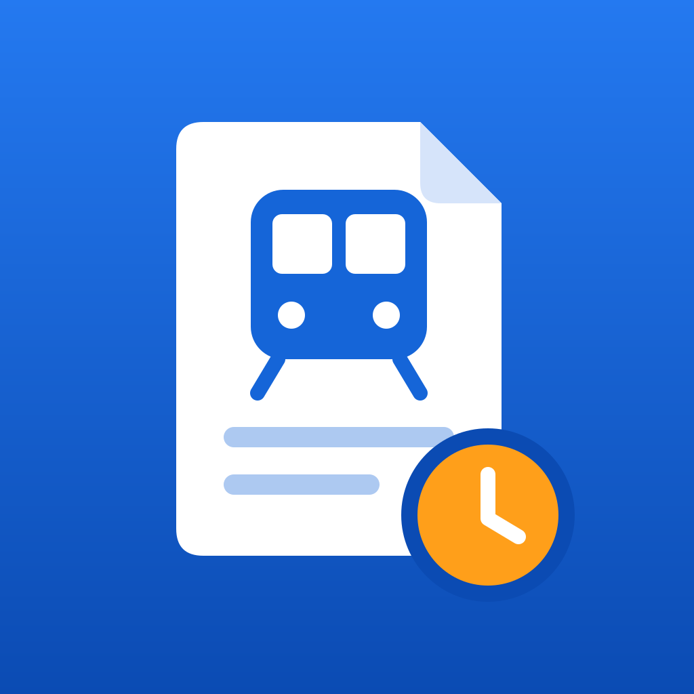

プライバシーポリシー
制定日：2026年11月17日
遅延パス（以下「本アプリ」）の運営者は、本アプリにおける利用者の情報の取り扱いについて、次のとおり定めます。
1. 運営者が取得する情報
運営者は、氏名・メールアドレス・電話番号・住所・位置情報などの個人情報を取得しません。
本アプリは運営者のサーバーを使用していません。お気に入りに登録した路線と、遅延証明書の検索履歴は、お使いの端末の中にだけ保存され、運営者には送信されません。
2. 広告について
本アプリは、Google LLC が提供する広告配信サービス「Google AdMob」を利用しています。
広告の配信、表示回数の計測、不正防止のため、Google が端末やアプリの利用に関する情報（IPアドレス、端末の種類、広告の表示やタップの状況、広告IDなど）を取得する場合があります。
本アプリは、利用者の興味・関心にもとづく広告（パーソナライズ広告）を表示しない設定にしています。
Google による情報の取り扱いについては、次のページをご確認ください。
3. 外部サイトへの移動
本アプリは、各鉄道会社の遅延証明書のページを、端末のブラウザで開きます。移動先のサイトでの情報の取り扱いは、各鉄道会社のプライバシーポリシーに従います。
4. 情報の削除
検索履歴は、本アプリの設定画面からいつでも削除できます。本アプリを削除すると、端末に保存された情報はすべて削除されます。
5. 本ポリシーの変更
機能の追加などにより情報の取り扱いが変わる場合は、本ポリシーを改定し、このページでお知らせします。
6. お問い合わせ
本ポリシーに関するお問い合わせは、次のメールアドレスまでご連絡ください。
qqkarte@gmail.com